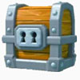

The giant chest is the cheapest chest you can buy from the store. At arena 8, where I am currently, the chest costs 490 gems, at lower arena levels the chest will be cheaper. The reason the giant chest is more expensive at higher arena levels, is that it contains more cards then. This is true for all the different chests in Clash Royale.
